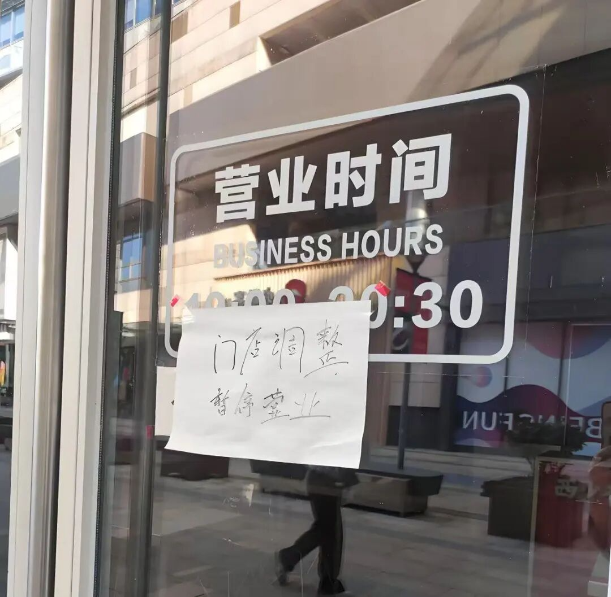
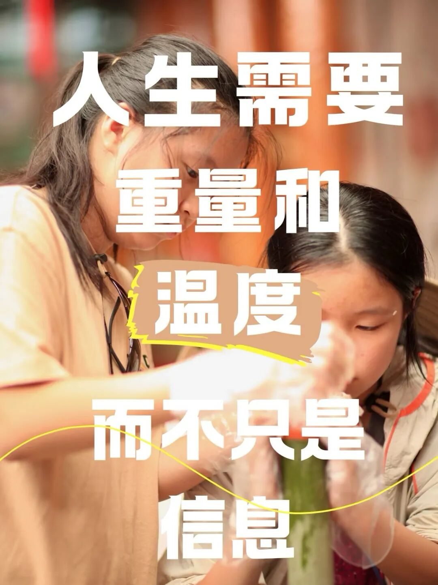

当你的保险代理人消失后：你的保单正在变成一堆“数字废纸”！

当你的保险代理人消失后：你的保单正在变成一堆“数字废纸”！
你以为那份每年按时缴费的保单是风雨中的庇护所，却不知当那个卖给你保险的人消失后，你的保障可能正在变成一串无人问津的数字代码。
“王姐，您放心，这份保单我会服务您一辈子！”
三年前，当你在客厅的沙发上签下那份年缴两万的重疾险合同时，代理人小李的承诺让你感到无比安心。
然而今天，当你拨打小李的电话，准备咨询理赔事宜时，听到的却是“您拨打的电话已停机”。
你慌了，翻出保单，拨打保险公司客服电话，却被告知：“您原来的代理人已经离职，我们会为您分配新的服务人员。”
但新的服务人员在哪里？什么时候来？没人能给你确切答案。
调查发现，超过70%的保险消费者在代理人离职后，陷入“保单无人管”的困境，你的保单，那份承载着家庭保障希望的契约，正在变成一堆冰冷的“数字废纸”。
1.消失的代理人，断裂的服务链
“您的代理人已离职，请稍等，正在为您转接……”
这句话，成了无数保险客户最不愿听到的“魔咒”。
数据显示，保险代理人行业留存率不足30%，意味着每10个代理人中，就有7个会在3年内离开这个行业，他们离开时带走了什么？
不只是名片和客户资料，更是那份曾经承诺的“终身服务”。
《保险代理人大量离职形成的天量孤儿保单，如何善后？》一文尖锐指出：“原代理人离职后，新接手的代理人或服务人员对客户需求、家庭状况及保单细节缺乏了解，导致服务断层。”
这种断层，让保单从“活契约”变成了“死文件”，更可怕的是，超过60%的“孤儿保单”在3年内无人主动联系。
你的健康状况变化、联系方式更新、家庭结构变动，这些本该及时告知保险公司的信息，因为服务中断而被遗忘在角落。
2. “数字废纸”的三大风险
风险一：理赔时的“信息孤岛”
当疾病或意外突然降临，你需要理赔时，才发现自己成了“信息孤岛”。
没有代理人指导，你不知道该准备哪些材料；不清楚理赔流程；甚至不知道哪些情况可以赔，哪些不能赔。
《薛定谔的理赔》中描述的场景可能成为现实：你的理赔申请在系统中“随机游走”，状态“经常发生莫名其妙的变化”。
一位客户在文章评论区留言：“我父亲癌症住院，想申请重疾险理赔，打了十几个电话，转了五个部门，等了两个月，最后因为‘材料不全’被拒。如果当初的代理人还在，至少有人告诉我该怎么做。”
风险二：续保时的“记忆断层”
“我忘了缴费。”这句话听起来像是客户的错，但背后往往是服务缺失的必然结果，代理人离职后，超过40%的客户因无人提醒而错过缴费期，导致保单失效。
《寿险保单最大风险：断供！》一文警告：“长期缴费有风险，请谨慎评估自己未来的收入状况。”
但谁来帮你评估？谁来提醒你？
当那个曾经每年准时提醒你缴费的人消失后，风险就变成了现实，更糟糕的是，一些客户在保单失效后重新投保，却因年龄增长、健康状况变化而面临保费上涨50%甚至被拒保的困境。
风险三：信息更新时的“黑洞效应”
你搬家了，换手机号了，结婚了，生孩子了……这些本该及时更新到保单中的信息，因为无人提醒而成为“被遗忘的数据”。
《不懂保险法，坑客户坑自己》中那个案例令人警醒：客户因未及时更新联系方式，错过了保险公司的重要通知，最终在理赔时陷入被动。
当你的代理人消失，这些本应流动的信息就凝固了，形成了一个个“数据黑洞”。
3. 为什么代理人会集体消失？
原因一：残酷的生存压力
《保险代理人大败局：鸟尽弓藏，兔死狗烹》揭露了行业的残酷现实：“保险公司调整基本法、强制降级重来……无论你干到什么级别，从明天开始重新定级。”
这种“推倒重来”的机制，让无数积累了多年客户资源的代理人一夜归零。
文章中的平安代理人坦言：“平安个险的代理人卖不了众安的产品，卖不了平安健康险公司的产品，平安人寿的产品又贵，保险责任又差，业务员太难了。”
原因二：失衡的佣金制度
《自保件：压垮代理人的最后一颗稻草》中那位总监的遭遇令人心酸：“去年年收入50万，不够交自己家的保费。”
现行佣金制度过度偏重首期保费提成，忽视续期服务激励，代理人为了生存，不得不不断开发新客户，而无力维护老客户。
《保险代理人大量离职形成的天量孤儿保单，如何善后？》指出：“由于续期保单的佣金比例较低，新代理人可能缺乏动力投入精力维护‘孤儿单’。”
原因三：行业的系统性困境
《个险渠道，终将成为被招安的水泊梁山》用梁山好汉的比喻描绘了代理人的命运：“无论匪兵甲还是卢俊义，结局都是嘎，不过是时间问题和嘎在谁手里的问题。”
文章指出：“过去5年，已经裁撤了1万多家机构了，今年前4个月，某寿险公司又裁撤了116家机构。”机构都没了，代理人何处安身？

4. 你的保单，真的变成废纸了吗？不一定，但你需要主动行动。
第一步：确认保单状态
立即拨打保险公司官方客服电话，核实保单是否有效、是否处于缴费期、是否有未处理的保全事项。
第二步：建立直接联系
要求保险公司提供固定的后续服务人员联系方式，并确认其职责范围。如果保险公司无法提供，可要求升级投诉至监管部门。
第三步：全面信息更新
将家庭住址、联系电话、银行账户、受益人信息等关键资料全部更新一遍，确保保险公司能联系到你。
第四步：了解关键权益
重点了解：保单贷款、减额交清、保单复效等权益如何操作。这些都是在紧急情况下可以动用的“救命功能”。
第五步：寻求专业帮助
如果保险公司服务不到位，可以考虑聘请独立的保险经纪人或律师协助管理保单。虽然需要支付一定费用，但能确保专业服务。
5. 行业自救：从“人海战术”到“专业服务”
《保险业为什么在“去中介化”？》一文指出，行业正在经历一场由“渠道依赖”转向“效率重构”的深刻变革。
这场变革的核心，是从依赖代理人个人关系的“人海战术”，转向建立系统化、标准化、可追溯的服务体系。
一些保险公司已经开始尝试：建立“客户服务经理”制度，取代传统的代理人一对一模式；开发智能客服系统，提供7×24小时基础服务；推行电子化保全，让客户可以通过APP自助完成大部分操作。
但《Deepseek取代的是培训讲师，而不是代理人》也提醒我们：“除非AI agent能够与人类建立起亲密关系，否则保险销售链条永远不可能把代理人这一环节淘汰掉。”
技术的进步可以提升效率，但无法完全替代人与人的信任和情感连接。

6.未来：你的保单需要怎样的守护者？
《你的保险代理人还在吗？》中写道：“你现在已经找不到会死缠烂打，赖在你的办公室或者是家里，然后一定要让你买一份保险的人，你找不到了。”这既是行业的悲哀，也是转型的契机。
未来的保险服务，需要的不是“推销员”，而是专业的风险管理顾问。
他们应该：
不依赖人情销售，而是基于专业分析；
不追求短期佣金，而是注重长期服务；
不轻易承诺“一辈子”，但建立可追溯的服务交接机制；
不只卖产品，而是提供全面的风险管理方案；
当你的代理人消失时，不要慌张，但一定要行动。
你的保单不是废纸，但它需要被“激活”，这份激活，既需要保险公司的系统支持，也需要你作为消费者的主动管理。
记住，保险的本质是一份法律契约，而不是人情承诺，契约的效力不因某个人的离开而消失，但契约价值的实现，需要持续的专业服务来保障。
下次购买保险时，不妨多问一句：“如果您离职了，我的保单将由谁继续服务？公司有怎样的服务交接机制？”
真正的保障，不应该建立在一个可能消失的人身上，而应该建立在系统、专业和契约精神之上。
别让你的保障，因为一个人的离开而变成一堆无人问津的数字，主动管理，才是对自己和家人最负责任的态度。
本文由 ShawnCH（何智翔）轉發，透過微信聊天記錄自動提取並整理。 原文連結：https://mp.weixin.qq.com/s?__biz=MzAwOTg0OTU1MQ==&mid=2651317649&idx=1&sn=f141eb3dcbd8bc2d2921ea001fe3e7fc&chksm=818332155fb9281044e1a63e0c22e8061ab6a8b758d45d74e445cdd493cdd17ead1cb9a8c244&mpshare=1&scene=1&srcid=0124WNPZtlIRnE472hnQOJG0&sharer_shareinfo=4e9ea4d9dbc5c8878ab25d793ac91dd1&sharer_shareinfo_first=4e9ea4d9dbc5c8878ab25d793ac91dd1#rd